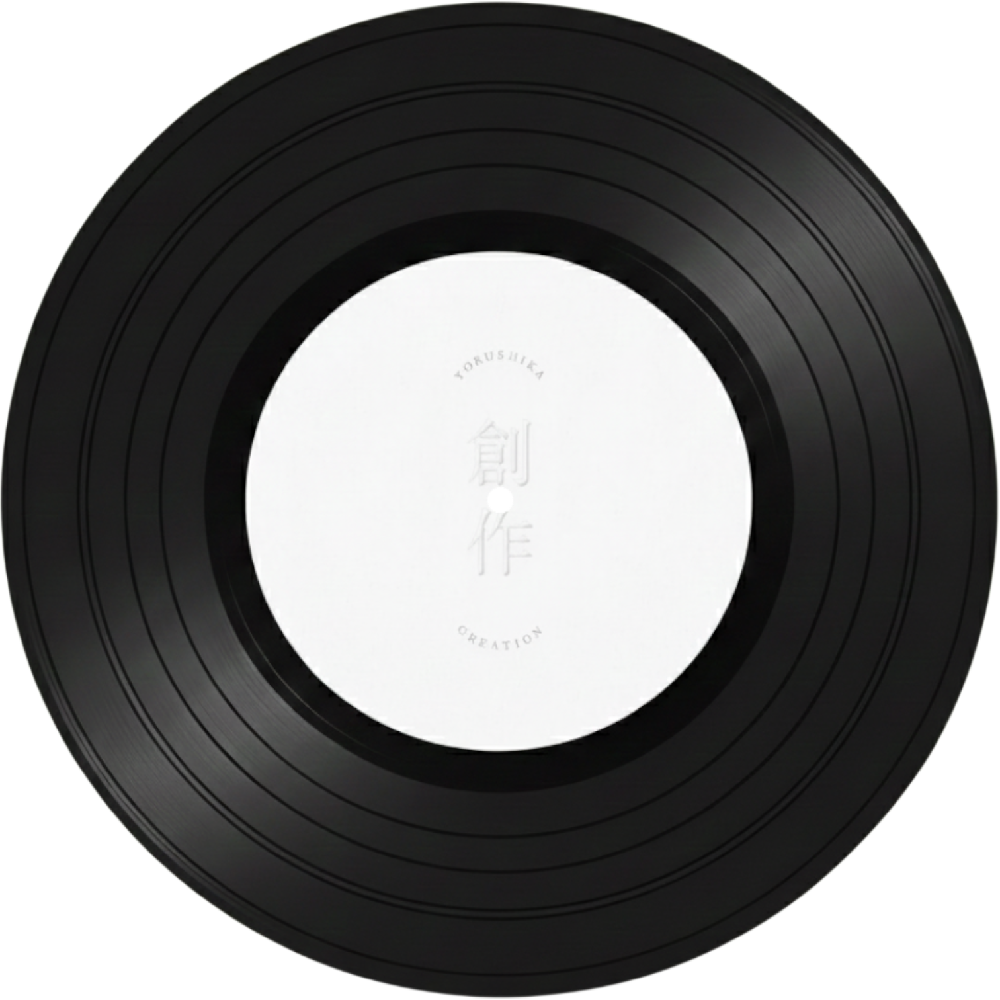
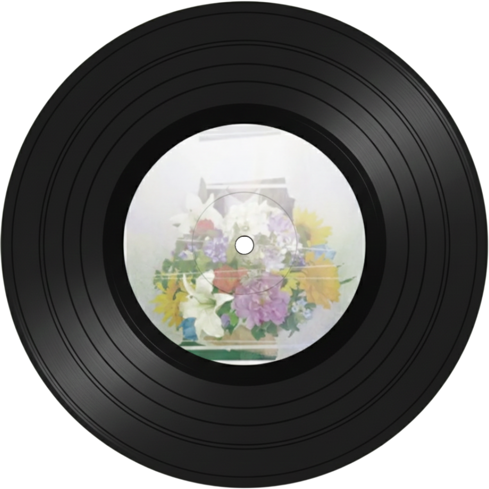
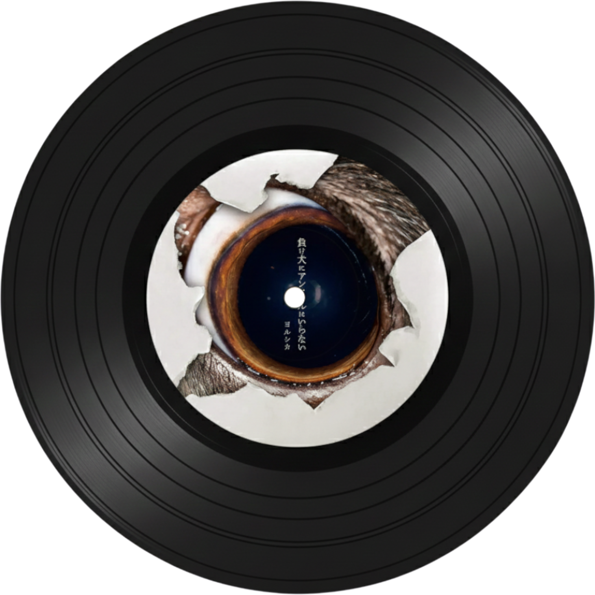

Yorushika(요루시카)

결성일: 2017년 4월 27일
레이블: Polydor Records
멤버:
- n-buna(작사, 작곡, 기타): 1995년생, 기타, 작곡, 편곡 다 하는 만능 리더
- suis(보컬): 1995년생, 맑으면서도 호소력 짙은 목소리의 주인공

左右盲(좌우맹)
영화 <오늘 밤, 세계에서 이 사랑이 사라진다 해도>의 주제가로 유명하다. 잊고 싶지 않은 소중한 기억이 점점 사라져가는 슬픔을 노래했다. 잔잔한 발라드를 좋아한다면 무조건
인생 곡이 될것이다.

嘘月(거짓말쟁이)
영화 <울고 싶은 나는 고양이 가면을 쓴다>의 엔딩 테마곡이다. 여름밤의 짙은 그리움과 쓸쓸함을 담고 있다. 울먹이는 듯한 스이의 목소리가 가슴을 툭 건드리는, 요루시카표
발라드의 진수이다.

言って。(말해줘)
요루시카를 대표하는 또 하나의 명곡이다. "네가 말해줘, 네가 전부 말해줘!"라고 외치는 후렴구가 정말 중독성 있다. 짝사랑하는 마음을 투정 부리듯 노래하는데, 신나는 리듬
속에 숨겨진 애절함이 포인트이다.

準透明少年(준투명
소년)
요루시카 특유의 질주감이 폭발하는 곡이다! 가사는 슬픈데, 멜로디는 역설적으로 엄청 신나고 빠르다. 우울한 기분을 떨쳐버리고 싶을 때, 이 노래를 들으면서 전력 질주하면
스트레스가 다 날아갈 것이다.